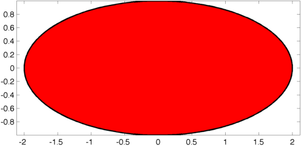
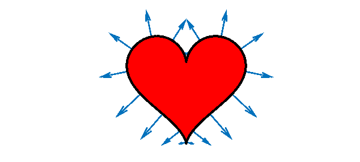
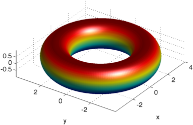
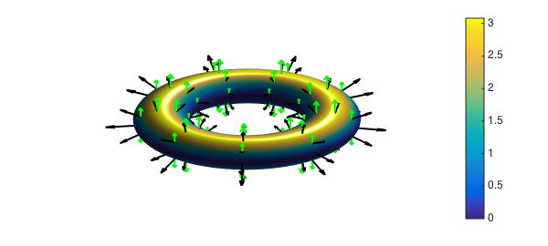
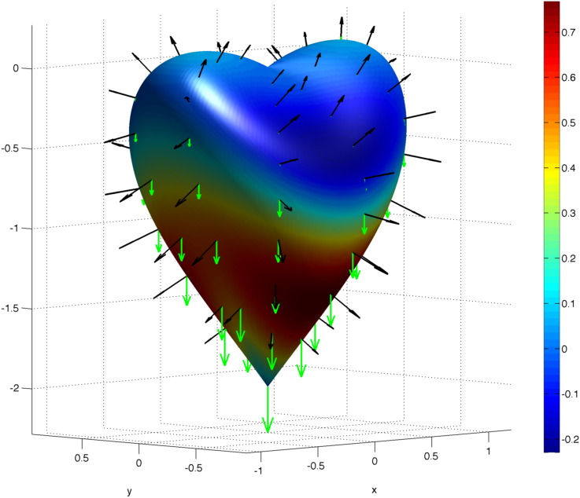
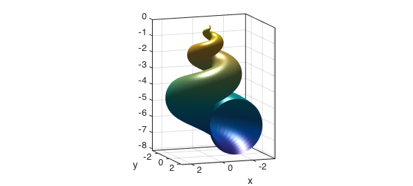
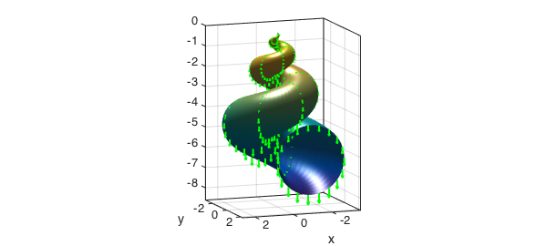

This example demonstrates how to compute the volume of a solid enclosed by a parameterized surface with Chebfun2. The main idea is to use the divergence theorem to relate the volume of a region to a surface integral. This process is first illustrated using Green's theorem, the two-dimensional version of the divergence theorem, to compute areas of planar regions.
Area of a planar region
For a two-dimensional vector field $F(x,y)=[f(x,y),g(x,y)]^T$ with continuous partial derivatives in a region $R$, Green's theorem states that the outward flux of $F$ across the boundary of $R$ equals the double integral of the its divergence over $R$.
$$ \oint_C F\cdot n \ ds = \int\limits_R \nabla \cdot F \ dV, $$
where $C$ is oriented counterclockwise and $n$ is the outward normal.
If $\nabla \cdot F = 1$ in $R$, therefore, the net flux of $F$ across $C$ equals the area of $R$. There are many vector fields satisfying this condition, such as
$$ F(x,y)=[x,0]^T,\qquad F(x,y)=[0,y]^T, \qquad F(x,y)=\frac{1}{2}[x,y]^T. $$
In the examples below, the last of these choices is used.
Consider the ellipse with semimajor and semiminor axis lengths 2 and 1.
t = chebfun(@(t) t, [0 2*pi]); x = 2*cos(t); y = sin(t); lw = 'linewidth'; fill(x,y,'r',lw,2), axis equal

The outward normal on its contour is given by
$$ n = \frac{1}{\sqrt{x'(t)^2+y'(t)^2}}\langle y'(t), -x'(t)\rangle , $$
and the contour integral becomes:
$$ A = \oint_C F\cdot n \ ds = \frac{1}{2} \int_0^{2\pi} x(t)y'(t)-y(t)x'(t) \ \ dt = \frac{1}{2} \int_0^{2\pi} 2\cos^2 t + 2\sin^2 t \ dt = 2\pi. $$
And that is what we get using chebfuns:
0.5*sum(x.*diff(y)-y.*diff(x))
ans = 6.283185307179585
We now apply the same procedure to compute the area of the heart region in the Chebfun Happy Valentines Day! example [1]. In the plot below, we include the normal vector field $[y(t),-x'(t)]^T$ at the boundary.
t = -chebfun('t',[0 2*pi]);
x = 16*sin(t).^3;
y = 13*cos(t)-5*cos(2*t)-2*cos(3*t)-1*cos(4*t);
dx = diff(x); dy = diff(y);
tt = linspace(-0,2*pi,20);
quiver(x(tt),y(tt),dy(tt),-dx(tt),lw,2), hold on
fill(x,y,'.-r',lw,3), axis equal off, hold off

The area of this heart-shaped region is:
0.5*sum(x.*diff(y)-y.*diff(x))
ans =
5.654866776461628e+02
Volume of a torus
In three dimensions, the divergence theorem is
$$ \int\limits_V(\nabla\cdot F)\ dV=\int\limits_S (F\cdot n) \ dS, $$
where $S$ is the surface boundary of $V$ and $n$ its outward normal. If we now take, for instance $F(x,y,z) = [0,0,z]^T$ we obtain the volume of the solid enclosed by $S$,
$$ V = \int\limits_S (F\cdot n) \ dS. $$
Suppose that we parameterize the surface $S$ using parameters $u$ and $v$, where $u$ and $v$ are defined on a planar region $R$. The surface integral in terms of $u$ and $v$ then becomes
$$ V = \left|\int\limits_R F(x(u,v),y(u,v),z(u,v))\cdot \left(\frac{\partial r}{\partial u}( u,v) \times \frac{\partial r}{\partial v}(u,v) \right) \ du dv \right|, $$
where $r(u,v)$ is the parametric description of $S$ in vector form. We use the absolute value above because the orientation of the normal vector is not well defined in this expression.
We will now use Chebfun2 to compute this double integral and approximate the volume of the torus with $R_T = 3$ and $r_T = 1$. We point out that its exact area and volume are $4\pi^2 R_T r_T$ and $2\pi^2 R_T r_T^2$, respectively.
u = chebfun2(@(u,v) u, [0 2*pi 0 2*pi]); v = chebfun2(@(u,v) v, [0 2*pi 0 2*pi]); x = (3+cos(v)).*cos(u); y = (3+cos(v)).*sin(u); z = sin(v); surf(x,y,z) view(-55,30), axis equal, camlight

We next compute and plot the vector field perpendicular to its surface. Notice that the normal command in Chebfun2 returns $r_v\times r_u$.
r = [x;y;z]; % position vector v = normal(r); % vector field perpendicular to S
We now plot the normal vectors and the field F over S.
F = [0*z;0*z;z]; quiver3(x,y,z,v,'k',lw,2,'numpts',10); hold on quiver3(x,y,z,F,'g',lw,2,'numpts',10); surf(x,y,z,F'*v), colorbar axis tight off, hold off, view(-28,64), camlight

The colors used in the surface of the torus show the integrand of the surface integral. The red region shows positive flux and in the blue the flux is close to zero, as $F$ is nearly parallel to the surface there. The net flux across the surface in this case is the volume of the torus. Using Chebfun2 we obtain
Vol = integral2(F'*v) Exact = 2*pi^2*3*1^2
Vol = 59.217626406536354 Exact = 59.217626406536148
This computation is accurate to about 14 digits.
We can also easily compute the area of the torus with using the magnitude of the vector field $v$ [2],
Area = integral2(sqrt(v'*v)) Exact = 4*pi^2*3*1
Area =
1.184352528130725e+02
Exact =
1.184352528130723e+02
Volume of a heart
We now consider the volume of a more complex three dimensional region, the heart region in the Chebfun Example called Happy Valentines Day! [3].
u = chebfun2(@(v,u) u,[0 1 0 4*pi]); v = chebfun2(@(v,u) v,[0 1 0 4*pi]); x = sin(pi*v).*cos(u/2); y = 0.7*sin(pi*v).*sin(u/2); z = (v-1).*(-49+50*v+30*v.*cos(u)+cos(2*u))./(-25+(cos(u)).^2);
As in the previous example, we next compute the vector the field orthogonal to the surface of this heart shaped region.
r = [x;y;z]; v = -normal(r);
We next plot the field $F$ and the normal $v$ on the surface of the heart. The dot product of $F$ and $v$ is used to color the surface.
F = [0*z;0*z;z]; quiver3(x,y,z,v,'k',lw,2,'numpts',10); hold on quiver3(x,y,z,F,'g',lw,2,'numpts',10); surf(x,y,z,F'*v), hold off axis equal tight, camlight, view(-45,5) colorbar, set(gcf,'position',[744 184 914 866])

Finally, we compute the volume of the heart.
Vol = integral2(F'*v)
Vol = 2.199114857512856
For comparison, here is the volume the bounding box that encloses the heart region.
lx = (max2(x)-min2(x)); ly = (max2(y)-min2(y)); lz = (max2(z)-min2(z)); VolBox = lx*ly*lz
VolBox = 5.973333333333412
Volume of a seashell
In our final example we compute the volume of the seashell region parameterized by the following equations.
u = chebfun2(@(u,v) u, [0 6*pi 0 2*pi]); v = chebfun2(@(u,v) v, [0 6*pi 0 2*pi]); x = 2*(1-exp(u/(6*pi))).*cos(u).*cos(v/2).^2; y = 2*(-1+exp(u/(6*pi))).*sin(u).*cos(v/2).^2; z = 1-exp(u/(3*pi))-sin(v)+exp(u/(6*pi)).*sin(v); surf(x,y,z), camlight view(160,10), axis equal, box on

Notice that in this case the parametrization gives an open surface at $y=0$ (corresponding to $u=2\pi$). As can be seen below, however, there is no flux across the open part of the seashell, as the vector filed $[0,0,z]$ is parallel to it.
hold on F = [0*z;0*z;z]; quiver3(x,y,z,F,'g',lw,2); hold off

As in the previous examples, therefore, the net flux across this surface gives the volume of the seashell.
r = [x;y;z]; v = -normal(r); Vol = integral2(F'*v)
Vol = 55.256380423125627
For comparison, here is the volume the bounding box that encloses the seashell.
lx = (max2(x)-min2(x)); ly = (max2(y)-min2(y)); lz = (max2(z)-min2(z)); VolBox = lx*ly*lz
VolBox =
2.579395508775318e+02
This solid fills about $21\%$ of its bounding box:
Vol/VolBox
ans = 0.214222209177068
References
-
Chebfun Example fun/ValentinesDay